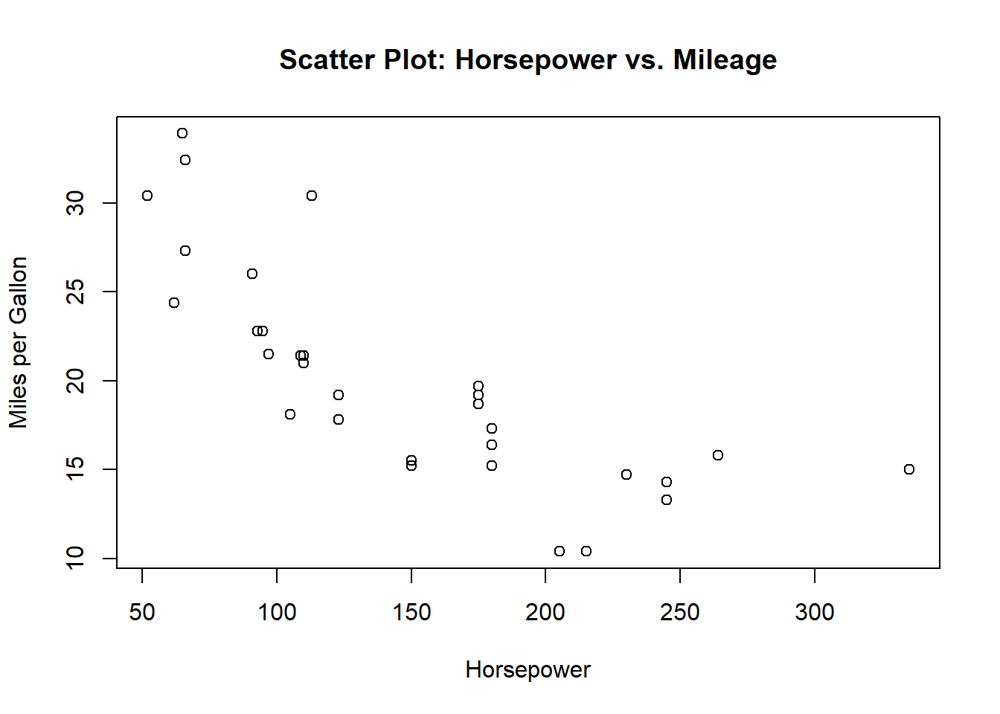

knitr::include_graphics("cars.jpg")Blog
Unveiling Insights: A Journey through EDA with the ‘mtcars’ Dataset
Welcome to a fascinating exploration of the ‘mtcars’ dataset! In this blog post, we will embark on a journey through Exploratory Data Analysis (EDA) using R. The ‘mtcars’ dataset, a classic dataset in R, contains specifications and performance measures of various car models.
Step 1: Loading the Dataset
Let’s start by loading the ‘mtcars’ dataset into our R environment.
# Load the mtcars dataset
data(mtcars)The provided code snippet loads the ‘mtcars’ dataset, a built-in dataset available in R. This dataset contains information about various car models, including their specifications like miles per gallon (mpg), number of cylinders, horsepower, and more. By using the command data(mtcars), this code makes the ‘mtcars’ dataset available for analysis and manipulation within the R environment.
Step 2: Univariate Analysis
Summary Statistics
To gain an initial understanding of the dataset, let’s examine some summary statistics.
# Display summary statistics
summary(mtcars) mpg cyl disp hp
Min. :10.40 Min. :4.000 Min. : 71.1 Min. : 52.0
1st Qu.:15.43 1st Qu.:4.000 1st Qu.:120.8 1st Qu.: 96.5
Median :19.20 Median :6.000 Median :196.3 Median :123.0
Mean :20.09 Mean :6.188 Mean :230.7 Mean :146.7
3rd Qu.:22.80 3rd Qu.:8.000 3rd Qu.:326.0 3rd Qu.:180.0
Max. :33.90 Max. :8.000 Max. :472.0 Max. :335.0
drat wt qsec vs
Min. :2.760 Min. :1.513 Min. :14.50 Min. :0.0000
1st Qu.:3.080 1st Qu.:2.581 1st Qu.:16.89 1st Qu.:0.0000
Median :3.695 Median :3.325 Median :17.71 Median :0.0000
Mean :3.597 Mean :3.217 Mean :17.85 Mean :0.4375
3rd Qu.:3.920 3rd Qu.:3.610 3rd Qu.:18.90 3rd Qu.:1.0000
Max. :4.930 Max. :5.424 Max. :22.90 Max. :1.0000
am gear carb
Min. :0.0000 Min. :3.000 Min. :1.000
1st Qu.:0.0000 1st Qu.:3.000 1st Qu.:2.000
Median :0.0000 Median :4.000 Median :2.000
Mean :0.4062 Mean :3.688 Mean :2.812
3rd Qu.:1.0000 3rd Qu.:4.000 3rd Qu.:4.000
Max. :1.0000 Max. :5.000 Max. :8.000 The provided code snippet showcases the functionality of R in analyzing the ‘mtcars’ dataset. With the help of the summary() function, this code efficiently presents a condensed summary of essential statistical metrics for each variable within the dataset.
By leveraging R’s summary() function, we gain insights into crucial statistics such as minimum and maximum values, median, quartiles, and means associated with every variable in the ‘mtcars’ dataset. Setting echo=TRUE allows the code and its resulting output to be displayed together, enabling clear visibility of both code execution and the summary statistics generated.
This simple yet powerful command provides a quick overview of the dataset’s key statistical measures, offering valuable insights into the range and distribution of the car attributes in the dataset.
Mileage Distribution
Now, let’s visualize the distribution of mileage (‘mpg’) using a histogram.
# Visualize distribution of mileage
hist(mtcars$mpg, main = "Distribution of Mileage (mpg)", xlab = "Miles per Gallon")In the provided code snippet, I’ve utilized R to craft a histogram that showcases the distribution pattern of mileage (measured in miles per gallon) from the ‘mtcars’ dataset. This histogram provides a visual representation of how often various mileage values occur across different car models.
By using the ‘hist()’ function, I’ve generated this histogram, emphasizing the x-axis as ‘Miles per Gallon’ and titling the plot as ‘Distribution of Mileage (mpg)’. This visualization effectively illustrates the spread and frequency of distinct mileage values within our dataset.
Notably, from the histogram, we can observe a notable peak in frequency within the 15-20 miles per gallon range, indicating that a significant number of car models in the dataset fall within this mileage range.
Step 3: Bivariate Analysis
Scatter Plot: Horsepower vs. Mileage
Let’s explore the relationship between horsepower (‘hp’) and mileage using a scatter plot.
# Scatter plot for horsepower vs. mileage
plot(mtcars$hp, mtcars$mpg, main = "Scatter Plot: Horsepower vs. Mileage", xlab = "Horsepower", ylab = "Miles per Gallon")
In this code snippet, I’ve generated a scatter plot using R. The plot visualizes the relationship between two key car attributes: horsepower and mileage (measured in miles per gallon, mpg).
The plot() function creates the scatter plot. I’ve specified mtcars$hp on the x-axis, representing the car’s horsepower, and mtcars$mpg on the y-axis, depicting the miles per gallon. Additionally, I’ve included a title for the plot (“Scatter Plot: Horsepower vs. Mileage”) using main, and labeled the x-axis as “Horsepower” and the y-axis as “Miles per Gallon” using xlab and ylab respectively.
This visualization allows us to understand the potential relationship between a car’s horsepower and its fuel efficiency, giving insight into how these factors might be correlated in the dataset.
Correlation Matrix
Now, let’s quantify the relationships between mileage, horsepower, and weight using a correlation matrix.
# Correlation matrix
cor(mtcars[, c("mpg", "hp", "wt")]) mpg hp wt
mpg 1.0000000 -0.7761684 -0.8676594
hp -0.7761684 1.0000000 0.6587479
wt -0.8676594 0.6587479 1.0000000In this code snippet using R, I’ve computed a correlation matrix for specific attributes within the ‘mtcars’ dataset. The variables ‘mpg’ (miles per gallon), ‘hp’ (horsepower), and ‘wt’ (car weight) were chosen for this analysis.
The output of the correlation matrix reveals the relationship between these variables. Each number in the matrix represents the correlation coefficient between two attributes. A correlation coefficient ranges from -1 to 1, where:
A value of 1 indicates a perfect positive correlation.
A value of -1 indicates a perfect negative correlation.
A value of 0 suggests no linear relationship between the variables.
For instance, in this matrix:
The correlation between ‘mpg’ and ‘hp’ is approximately -0.776, indicating a moderate negative correlation.
The correlation between ‘mpg’ and ‘wt’ is around -0.868, showing a strong negative relationship.
The correlation between ‘hp’ and ‘wt’ is about 0.659, representing a moderate positive correlation.
This analysis helps to understand the interdependencies among these car attributes, providing insights into how changes in one attribute might affect others.
Step 4: Multivariate Analysis
Pairwise Scatterplot Matrix
Visualize relationships involving multiple variables with a pairwise scatterplot matrix.
# Pairwise scatterplot matrix
pairs(mtcars[, c("mpg", "hp", "wt", "disp")])In the provided R code snippet, I’ve generated a pairwise scatterplot matrix using the ‘pairs()’ function for selected variables from the ‘mtcars’ dataset. The variables included for analysis are ‘mpg’ (miles per gallon), ‘hp’ (horsepower), ‘wt’ (car weight), and ‘disp’ (displacement).
This scatterplot matrix visually presents relationships among these specific car attributes by showcasing scatterplots of each variable against every other variable in the selected set. Each scatterplot represents the correlation or pattern between two attributes, offering a comprehensive view of their interactions.
The resulting output is a matrix of scatterplots arranged in a grid format, where the diagonal displays histograms showcasing the distribution of individual variables. The off-diagonal elements exhibit scatterplots illustrating the relationship between pairs of attributes.
This visual representation aids in identifying potential correlations, trends, or patterns among the selected car attributes, providing an intuitive overview of their interrelationships within the dataset.
Boxplot: Mileage Distribution by Number of Cylinders
Explore how the number of cylinders (‘cyl’) influences mileage using a boxplot.
# Boxplot by number of cylinders
boxplot(mpg ~ cyl, data = mtcars, main = "Mileage Distribution by Number of Cylinders", xlab = "Number of Cylinders", ylab = "Miles per Gallon")In this code segment using R, I’ve generated a boxplot visualization to explore the relationship between the number of cylinders in cars and their corresponding mileage (measured in miles per gallon, mpg).
The boxplot() function creates the graphical representation. By specifying mpg ~ cyl, I’ve directed the plot to display the distribution of mileage for different numbers of cylinders. The ‘mtcars’ dataset is utilized for this analysis.
The resulting boxplot visually compares the mileage distributions across various cylinder counts. The x-axis shows the number of cylinders in the cars, while the y-axis represents the miles per gallon achieved by each category. This visualization helps in understanding the variation in mileage concerning the different cylinder configurations, showcasing potential trends or differences in fuel efficiency based on the number of cylinders.
By observing the spread and median values depicted in the boxplot for each cylinder count category, we can gain insights into how the number of cylinders might impact the overall mileage performance of cars.
Conclusion
In this journey through EDA with the ‘mtcars’ dataset, we uncovered valuable insights about the relationships between mileage, horsepower, and other specifications. Higher horsepower tends to correlate with lower mileage, and there’s significant variation in mileage based on the number of cylinders.
Closing Thoughts
EDA is a powerful tool for gaining a deeper understanding of your data. I encourage you to apply these techniques to your own datasets and explore the fascinating stories they hold. Happy exploring!